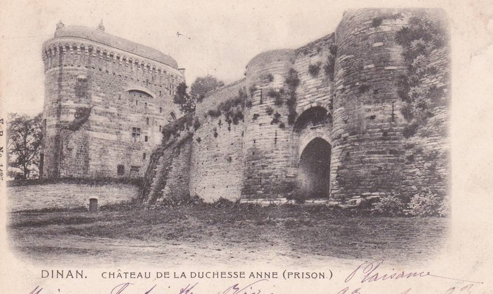
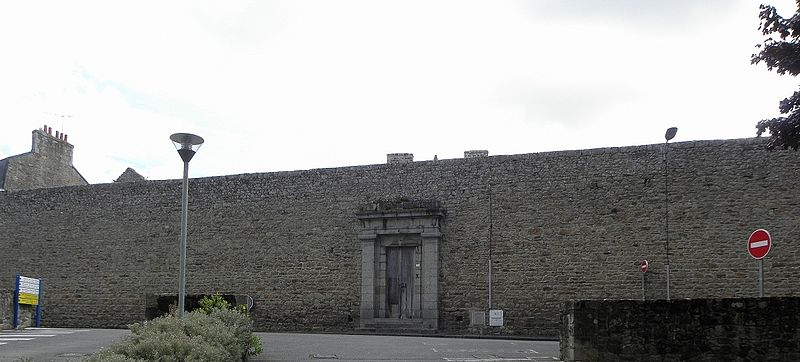
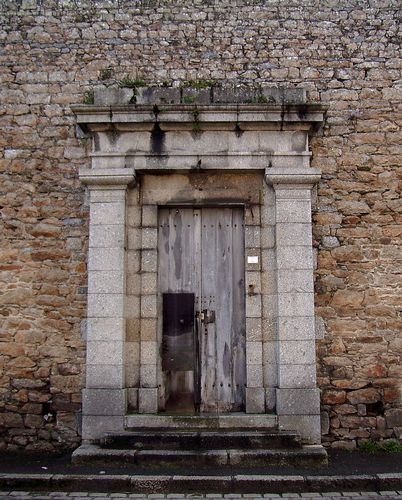
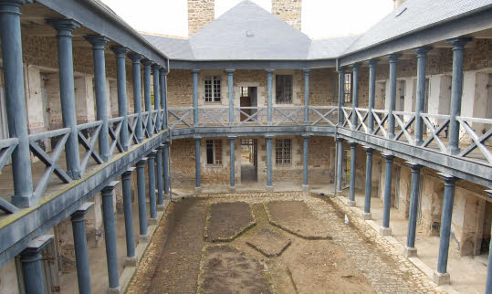
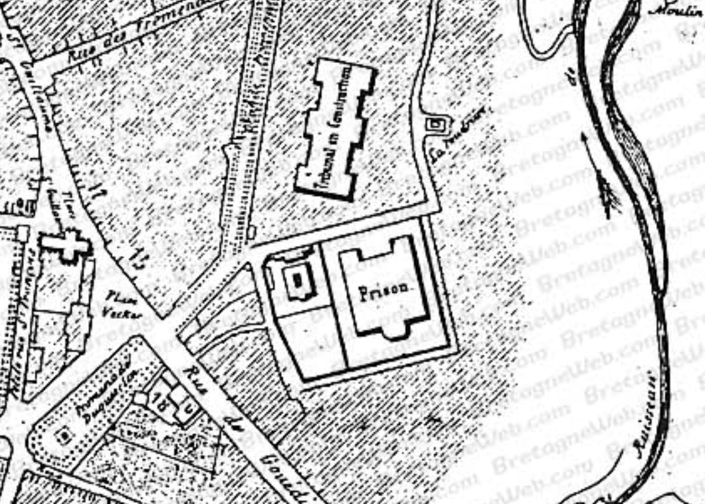
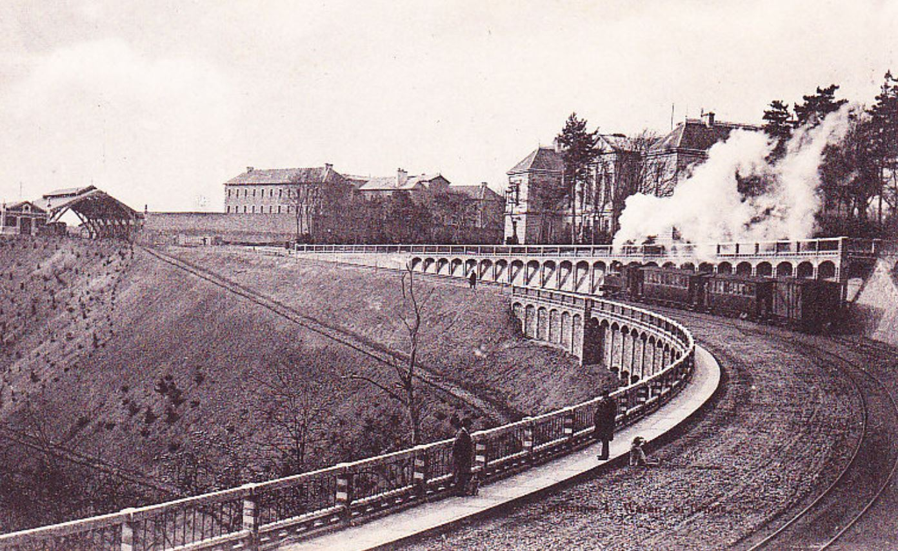
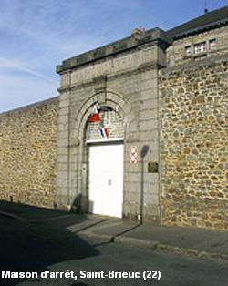
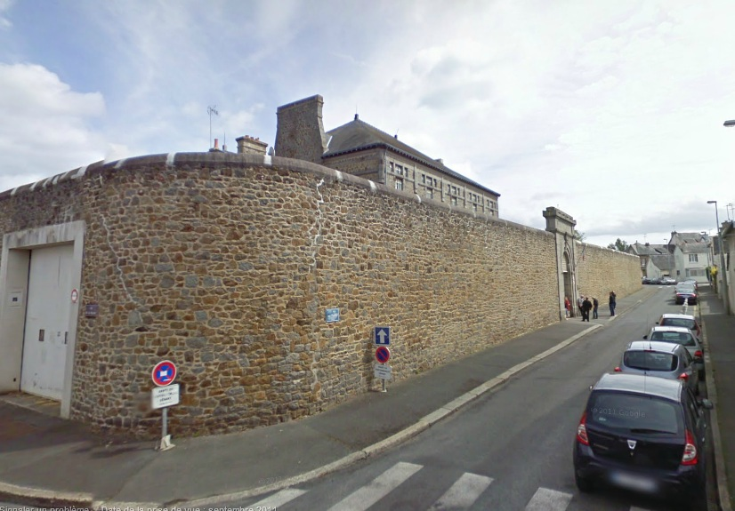
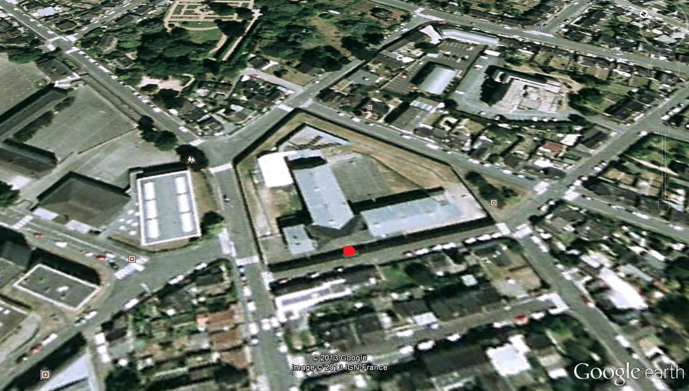
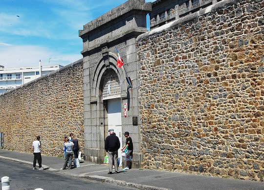

| Département | Images | Ville | Nom | Adresse | Période | Capacité | Histoire du lieu | Nombre d'exécutions |
| Côtes-d'Armor (22) |  |
Dinan | Maison d'arrêt | 12, rue Chauffepieds | 1795-1945 | Ancien couvent des Dominicaines. Classé monument historique le 09 octobre 1990. | Aucune exécution | |
| Côtes-d'Armor (22) |    |
Guingamp | Maison d'arrêt | 4, rue Auguste Pavie | 1840-1951 | 35 cellules, première - et seule - prison de conception "humaniste". Fermée en 1934, rouverte pendant la seconde guerre mondiale. Fermée en 1951, propriété de la ville en 1992 | Aucune exécution | |
| Côtes-d'Armor (22) | Lannion | Maison d'arrêt | Allée du palais de Justice | 1893-1945 | Situé au bout d'une impasse à côté du palais de justice. | Aucune exécution | ||
| Côtes-d'Armor (22) | Loudéac | Maison d'arrêt | 34, rue de Moncontour | 1823-1926 | Faute de précision sur l'image, on ne peut que supposer que la maison d'arrêt est le premier bâtiment sur la droite, au sud de la Chapelle de la Clinique de la Providence désormais détruite. Le tribunal se trouve un peu plus haut dans la rue. A la place de l'ancienne prison se trouve, depuis 1936, le foyer municipal. | Aucune exécution | ||
| Côtes-d'Armor (22) |   |
Saint-Brieuc | Maison d'arrêt, de justice et de correction | Avenue du Palais (Boulevard de Sévigné) | -1914. | Voisine directe du palais de justice. Normalement, sa destruction est prévue dans le mois suivant sa fermeture, ses pierres serviront à construire hangars et écuries proches de l'abattoir municipal, et destinés à la voirie. Cependant, en juillet 1914, la démolition n'a pas encore eu lieu - peut-être à cause du prix : 34.000 francs pour un rapport de 5.600 francs, ce qui est une fois de plus discuté par le conseil municipal. Durant la Grande Guerre, on se sert des bâtiments encore adaptés pour enfermer les prisonniers de guerre allemands, puis après l'armistice, les locaux servent de logement à une soixantaine de ménages (environ 300 personnes), situation toujours en cours en avril 1922 ! | Une exécution en 1912. | |
| Côtes-d'Armor (22) |     |
Saint-Brieuc | Maison d'arrêt, de justice et de correction | Rue de la Justice / Rue des Fusillés | En service depuis 1914. | 121 places (1962) 86 places (2015) |
Le projet de construire une nouvelle prison cellulaire à Saint-Brieuc est approuvé le 21 mars 1910. L'ancienne maison d'arrêt est vouée dans un premier temps à disparaître rapidement - l'adjudication des travaux étant prévue pour le mois suivant - tandis que les nouveaux bâtiments doivent s'élever non loin des Villes-Dorées, sur le plateau du Gouédic, avec une date de remise fixée à janvier 1913. Un crédit de 80.000 francs est débloqué par le Conseil Général le 22 août 1911 et un an après, le 20 août, un nouveau crédit de 25.000 francs est voté. Les travaux, qui avaient fort bien démarré, sont ralentis à compter de janvier 1912... parce que l'architecte départemental Bourges et l'entrepreneur Travadel ne cessent de se prendre le bec quant au mur d'enceinte, situation qui ne sera "apaisée" que via une audience devant le Conseil de préfecture. En février 1913, la situation n'est toujours pas désamorcée, les travaux encore en cours, et le conseil municipal traite d'un oubli somme toute important : aucun logement n'a été prévu dans les plans de la nouvelle prison pour l'hébergement des gardiens... Le chantier reprend en avril 1913, pour une construction en août... qui ne prendra fin qu'avec la réception des travaux, le mardi 03 mars 1914 à 10 heures. L'inauguration a lieu vers le 15 mars, et le transfert des détenus dans la foulée. | Six exécutions en 1922, 1938, 1939, 1949, 1950 et 1951. |
{kind=link}
{kind=link}
{kind=link}
{kind=link}
{kind=link}
{kind=link}
{kind=link}
{kind=link}
{kind=link}
{kind=link}
{kind=link}